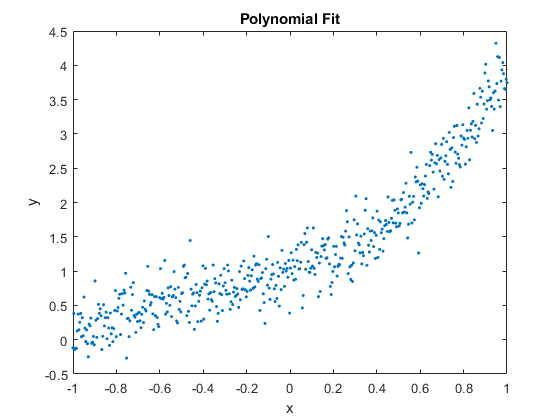
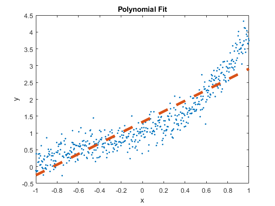
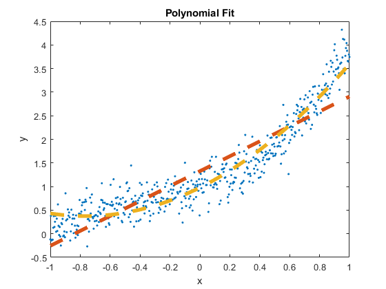
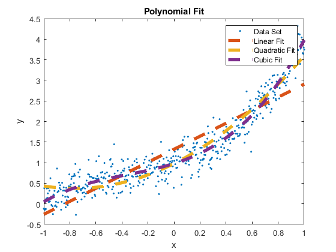
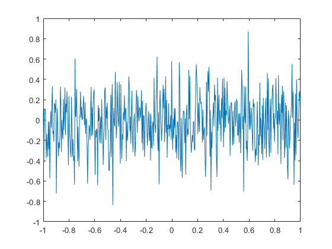
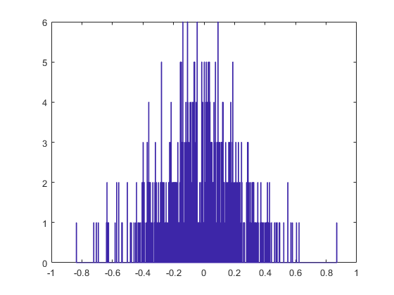

Contents
% Poly Fit % HW 4 Pb 1d clear clc close all
Plot of noisy data
load('test_lsq.mat') figure, plot(x,ynoisy,'.','MarkerSize',7) xlabel('x'), ylabel('y'), title('Polynomial Fit') hold on
Linear Fit
Order of Poly Being Fitted
n = 1; % Set up the Jacobian for an elimination fit to a line J = cat(2,ones(length(x),1)); for i = 1 : n xi = x(:).^i; J = cat(2,J,xi); end % for M=J'*J; yprime=J'*ynoisy(:); [Mmod,ord]=Gauss_elim(M,yprime); avec=backsub(Mmod(ord,:)) yfit = 0; for i = 1 : n+1 yfit = yfit + avec(i)*x.^(i-1); end % for KiSq1 = KiSq(ynoisy,yfit,sigmay,n) plot(x,yfit,'--','LineWidth',4);
avec =
1.3247
1.5812
KiSq1 =
2.9125
 Quadratic Fit
Order of Poly Being Fitted
n = 2; % Set up the Jacobian for an elimination fit to a line J = cat(2,ones(length(x),1)); for i = 1 : n xi = x(:).^i; J = cat(2,J,xi); end % for M=J'*J; yprime=J'*ynoisy(:); [Mmod,ord]=Gauss_elim(M,yprime); avec=backsub(Mmod(ord,:)) yfit2 = 0; for i = 1 : n+1 yfit2 = yfit2 + avec(i)*x.^(i-1); end % for KiSq2 = KiSq(ynoisy,yfit2,sigmay,n) plot(x,yfit2,'--','LineWidth',4);
avec =
0.9785
1.5812
1.0344
KiSq2 =
1.3754
 Cubic Fit
Order of Poly Being Fitted
n = 3; % Set up the Jacobian for an elimination fit to a line J = cat(2,ones(length(x),1)); for i = 1 : n xi = x(:).^i; J = cat(2,J,xi); end % for M=J'*J; yprime=J'*ynoisy(:); [Mmod,ord]=Gauss_elim(M,yprime); avec=backsub(Mmod(ord,:)) yfit3 = 0; for i = 1 : n+1 yfit3 = yfit3 + avec(i)*x.^(i-1); end % for KiSq3 = KiSq(ynoisy,yfit3,sigmay,n) plot(x,yfit3,'--','LineWidth',4); legend('Data Set','Linear Fit','Quadratic Fit','Cubic Fit'); hold off figure, plot(x,polyval(avec,x)-ynoisy) figure, hist(polyval(avec,x)-ynoisy,512)
avec =
0.9785
0.9980
1.0344
0.9682
KiSq3 =
1.0285
  